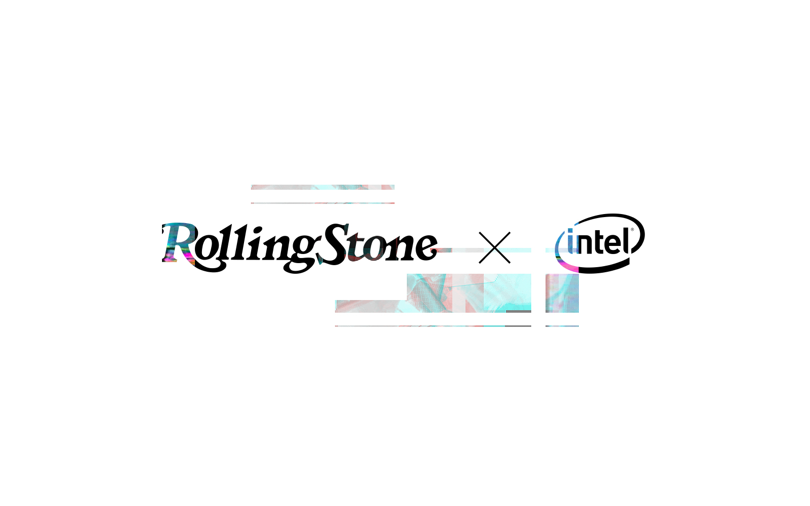
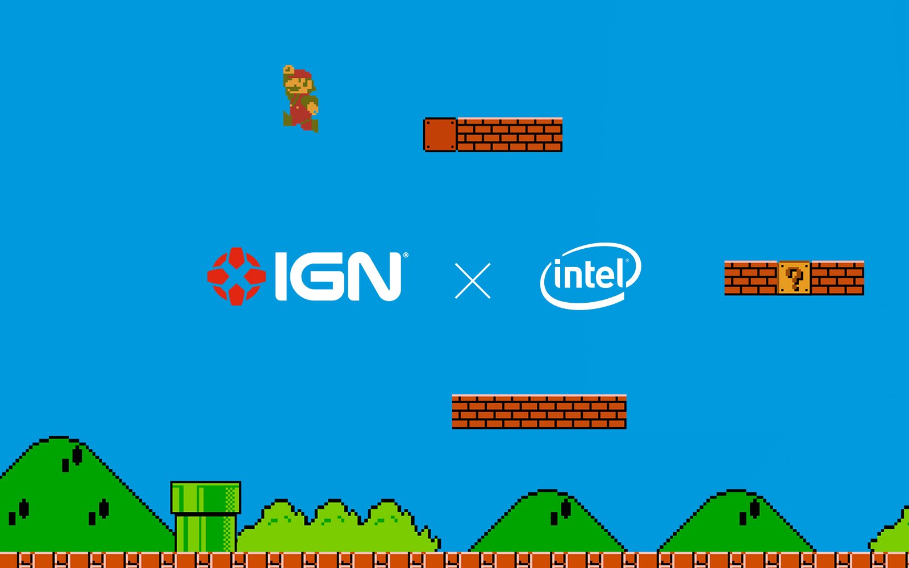
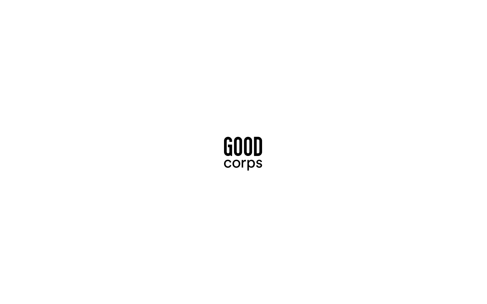
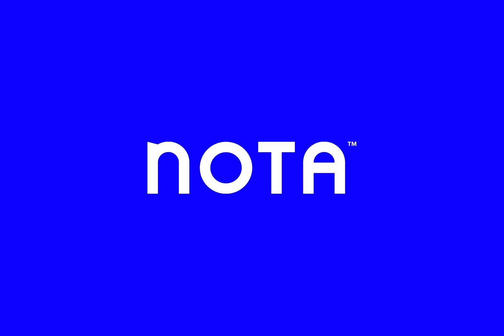
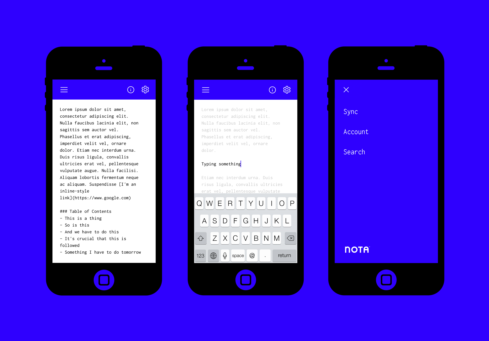
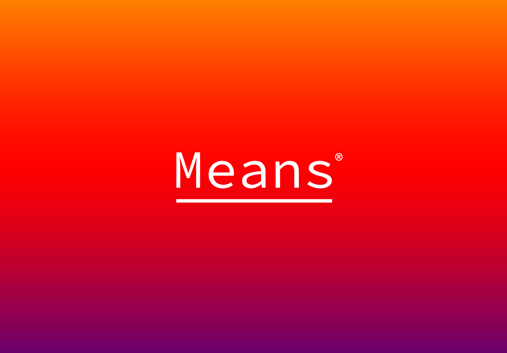
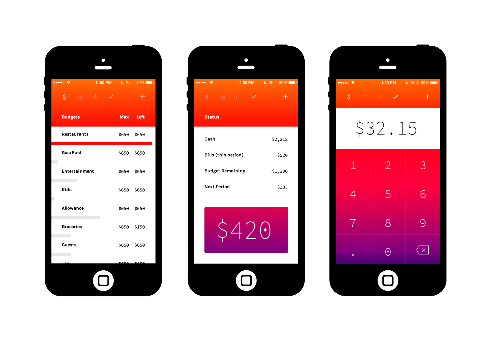
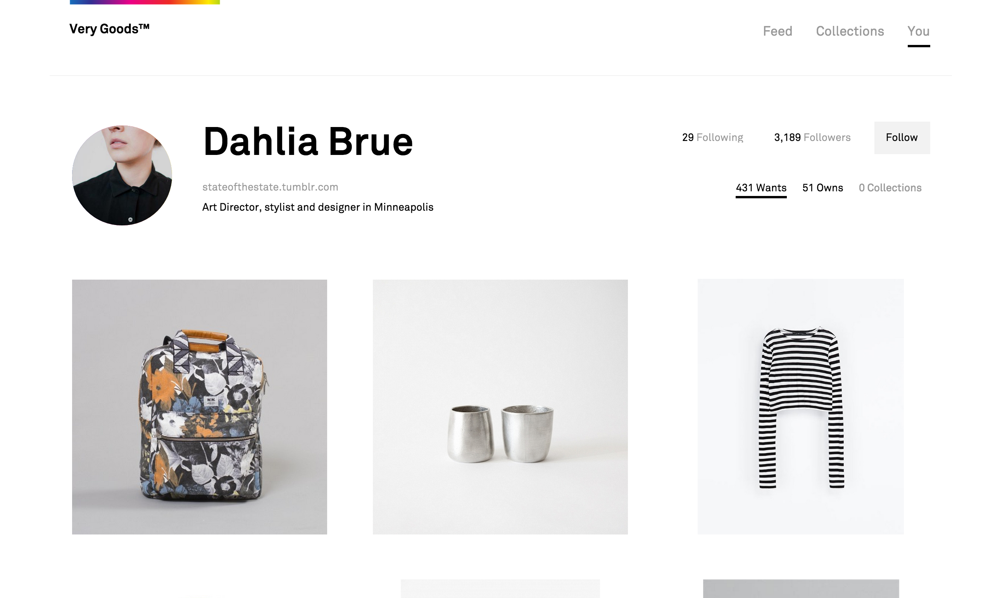
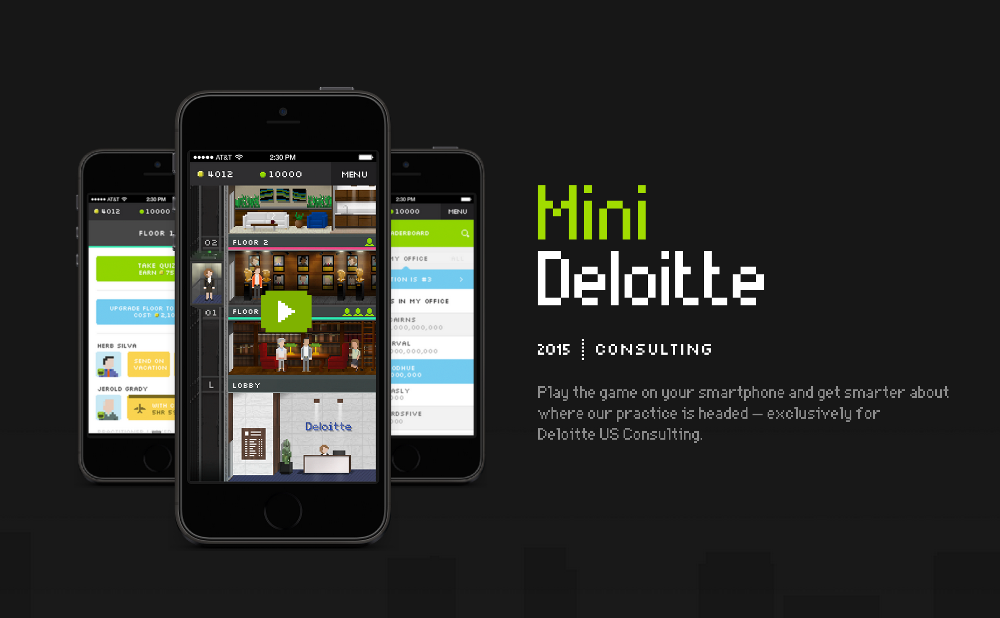

Jeremy P. Beasley
Selected Work —
Intel (2012 - 2013)
As part of a larger effort to gain attention for Intel within the HTML5 developer community, my team was tasked to pull of a series of projects that showcased HTML5 and other modern web technologies. We built a community website called the "HTML5 Hub" with the help of Kyle Simpson, Todd Motto and other web dev influencers. Our idea was to connect with major publishers and bring their content to life with modern web technologies.
 Real Escape From The Sex Trade (2012 - Present)
Shortly after meeting the founders of REST in 2012, I began serving as their creative director. I've managed a small team and guided us through a process of rebranding, a new website (twice), and various creative materials.

GOOD (2014 - Present)
I worked with GOODcorps to launch a new website. This involved design, development, and lots of guide and collaboration on messaging and storytelling for their work and organization.
Nota (2012)
Few things are as important to my creative workflow as note taking. I found that most of the note taking apps available tended to be completely cluttered with features that I rarely used or cared to look at on a daily basis. During my discontentment, I became enamored with Markdown as a text format.
I wanted a clean note taking app that allowed me to index my notes but also have very little to distract while writing. Nota uses Markdown by default and allows users to use customizable stylesheet which they can toggle between views using a simple keyboard shortcut
 Means (2013)
Personal finance app still in development. Birthed out of a desire to both build discipline in budgeting and accommodate planning around actual paychecks instead of months or other set periods of time. Built with some aspects of the classic envelope system in mind, Means is undergoing endorsement by Dave Ramsey. It's built 100% on HTML5 with no native code whatsoever.
 Very Goods (2014)
Prototype and exploration for bookmarking / collection service, Very Goods.
Mini Deloitte (2014 - 2015)
Who wants to go through another company Human Resource video? Is there a way to make learning a much more entertaining experience while seeing people actually retain it's content? Yes, yes, and yes. Mini Deloitte is a mobile simulation game aimed to drive adoption of the 2015 Deloitte Consulting Strategy across over 30,000 employees.
Various Other Projects
Thank you.